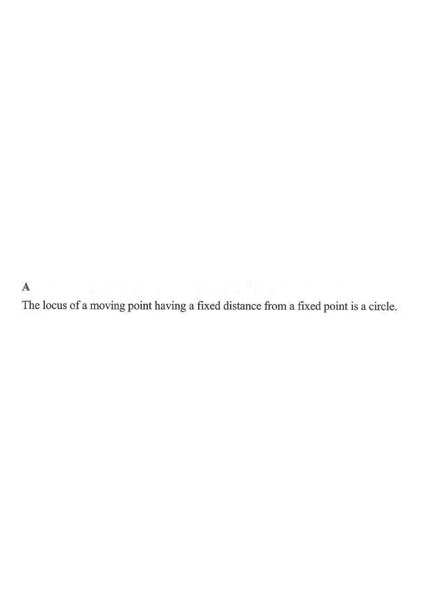

DSE 2012 · 卷二 · Q24
軌跡
題目
若 $P$ 為直角坐標平面上的一動點使得 $P$ 與點 $(20,12)$ 之間的距離等於 $5$，則 $P$ 的軌跡為一
A
圓。
B
正方形。
C
拋物線。
D
三角形。
題解
r = 5
20
12
C(20,12)
P
x
y
圖：$P$ 與 $(20,12)$ 的距離恆為 $5$，軌跡是以 $(20,12)$ 為圓心、半徑 $5$ 的圓（題解繪）

圖：題解附圖（原試卷）
第 1 步
把「距離固定」寫成方程
兩點距離公式
\(\sqrt{(x-20)^{2}+(y-12)^{2}}=5\)
設 $P=(x,y)$，把題目的距離條件直接寫成方程。
兩邊平方： \[ (x-20)^{2}+(y-12)^{2}=25. \] 這是圓的標準式，圓心 $(20,12)$、半徑 $5$。
第 2 步
由方程辨認圖形
圓的標準式
\((x-h)^{2}+(y-k)^{2}=r^{2}\)
$x^{2}$ 與 $y^{2}$ 的係數相同且無 $xy$ 項，代表圓。
方程中 $x^{2}$、$y^{2}$ 係數同為 $1$，故軌跡是一個圓。
正方形、拋物線、三角形都不可能由「到一定點距離固定」產生（到兩定點距離相等才是直線，
到定點與定直線距離相等才是拋物線）。
對照選項，答案為
A
。
答案
A
（圓）
練習
同類新題
題目.
若 $P$ 為直角坐標平面上的一動點使得 $P$ 與點 $(0,-3)$ 之間的距離等於 $4$，則 $P$ 的軌跡為一
A
圓。
B
直線。
C
拋物線。
D
一點。
顯示題解
第 1 步.
設 $P=(x,y)$，條件為 $\sqrt{x^{2}+(y+3)^{2}}=4$。
第 2 步.
平方得 $x^{2}+(y+3)^{2}=16$，是圓心 $(0,-3)$、半徑 $4$ 的圓。
第 3 步.
距離固定為正數 $4$，軌跡是完整的圓，答案
A
。
答案：
A
（圓）
‹ 上一題
目錄
下一題 ›